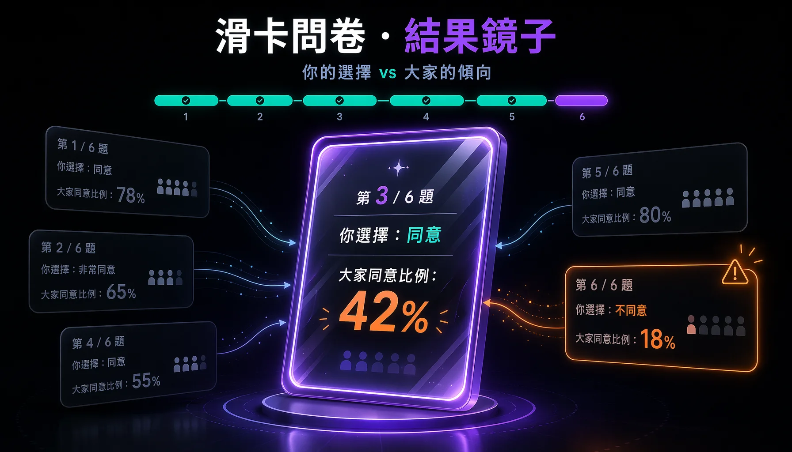

很多人一看到問卷就想關掉。常見的解釋是「填問卷很花時間」，真正讓人反感的，通常是三件事疊加：被一個與自己無關的主題打擾、題目多到看不到盡頭，以及填完之後石沉大海。這個前端模組聚焦於後面兩件事：縮短作答過程、降低填答負擔，並在結尾提供填答者一個回來看自己結果的理由。
這是一個互動網頁模組：六張題目卡片，用滑動作答（滑鼠拖曳或手指滑動，也支援鍵盤左右鍵）。上方有進度條，滑完六題後出現結果頁，先給一個輕鬆的「型別」，再逐題列出你的選擇與大家同意的比例，跟多數人相反的題目會被標出來。下方的群體數據是示意用的假資料，正式版可接後端即時統計。

# 為什麼大家對填問卷反感
把「填很久」當成主因，會錯過更關鍵的一層。在問卷研究裡被反覆指認的主因，是填答者覺得對方根本不會根據回饋做任何事。當一個人認定「我填了也不會改變什麼」，作答動機就消失了，剩下的只是把表單關掉。回饋斷層比題目長度或寄送頻率，更能解釋參與率持續下降的原因。
題目數量則決定了作答品質。題目一多，人會從「認真讀每一題」滑向「快速掃過、隨手選一個」。一份回收上來看起來資料量很大，後半段其實全是敷衍的直線式作答。這兩件事合起來，就是問卷最常見的失敗：發得出去、收得回來，收到的卻是雜訊。
-
主題與我無關：
被請去填的，常常是跟自己生活沒有交集的題目，從第一秒就缺乏作答動機。 -
題目太長：
整頁題目一次攤開，光是往下滑就讓人想放棄；撐著填完的人，後段品質也已經崩了。 -
填完石沉大海：
填答者拿不到任何回饋，自然得出「填了也沒用」的結論。這是反感最深的一層。
# 互填文化撐起了數量，換來的是品質崩壞
在學術圈，問卷回收量的壓力催生出一整套「互填」生態：你幫我填、我幫你填，雙方對彼此的主題都沒有興趣。這種交易型的義務把回收數字撐了起來，代價是作答品質。當填答者看不懂題目、又只想盡快還掉這份人情，他會直接隨意填，研究因此失去效度與母體代表性。互填平台越成功，交付的資料就越接近雜訊，這是其結構上的矛盾。一份兩百筆的回收，可能有一半根本不能用。
因此，問卷反感的來源其實很具體：陌生主題的打擾、題目過長，以及填完後無聲無息，三個問題疊加。要讓人願意認真填，就得從這三點拆解。這個模組先處理「過程」與「回饋」兩塊，至於主題的精準投放，那是另一個層次的問題。
# 設計回應一：把作答的摩擦降到最低
第一個方向是讓「填」這個動作本身變輕，靠三個具體做法。
-
一次一張，降低題海感：
題目以卡片堆疊，一次只露出最上面一張，後面的縮小墊在底下。看到的永遠只有眼前這題，整份問卷的長度被藏了起來。 -
滑動取代點擊：
往右同意、往左不同意，在手機上像翻牌一樣自然。拖到一定距離才算數，沒到就彈回；拖曳時卡片會傾斜，並浮現對應顏色的標籤，提供即時回饋。鍵盤與按鈕保留為備援。 -
進度條：
頂部一條進度條，觸發人「想把開始的事做完」的本能。每滑掉一張，進度就往前一格，作答變成一件看得到終點的事。
# Interactive Module: 滑卡問卷
# 設計回應二：給填答者一面鏡子
過程變輕之後，剩下回饋斷層這一塊。最有效的補法是互惠：先給對方一點東西，對方會把認真作答當成一種回禮。金錢誘因（抽獎、回饋金）是一種，但成本高，也不見得每個情境都適合。真正被低估的，是將結果回饋給填答者。
一個現成的例子是哈佛的 Project Implicit 內隱聯結測驗：你做完之後，它會告訴你「你的結果落在整體人口分布的哪個位置」。這招幾乎零成本，卻給了填答者一個真實的理由去填——我能拿到一面照自己的鏡子。問卷從「把資料交出去」變成「我也得到了一些東西」。
這個模組的結果頁就是這件事的最小實作。滑完六題，畫面先給一個輕鬆的型別當作收尾的鉤子，再逐題把「你的選擇」對上「大家同意的比例」。跟多數人相反的題目被標成琥珀色，讓填答者一眼看到自己在哪裡和別人不一樣。互惠與回饋在這一頁同時成立。
# 適用範圍與下一步
滑卡適合輕量、態度傾向類的題目，靠「同意／不同意」就能表達。需要嚴謹測量的場合——李克特七點量表、矩陣題、需要精確刻度的研究問卷——還是該回到正規表單，滑動會破壞測量的精度。把這個模組用對地方，它降低的是填答的心理門檻，研究的嚴謹度交給正規工具去守。
目前結果頁的群體數據是靜態的假資料，僅用於示範鏡子的呈現方式。下一步是接上後端：每滑完一份就寫一筆，結果頁的「大家同意比例」改成真實的即時查詢。那一步會把這個 demo 變成真的能驗證需求的東西，也是這面鏡子真正開始有意義的地方。
參考
- Project Implicit，Implicit Association Test（哈佛大學）。做完測驗後會顯示你的結果落在整體匿名資料的分布位置，是「把結果回饋給填答者」的一個公開例子。
- CMSWire，Your Customers Aren’t Quiet—They’ve Given Up on Your Surveys。指出停止回覆問卷的人多半仍有意見，只是已經不相信自己的回饋會帶來實際改變。